地政学
ラスベガスはモハーベ砂漠、軍事試験場、フーバーダム、コロラド川の水資源、州境を越える観光流動の結節です。歓楽の街の印象の背後で、連邦土地、先住民史、水の配分が都市の条件を作ります。砂漠の政治を映します。
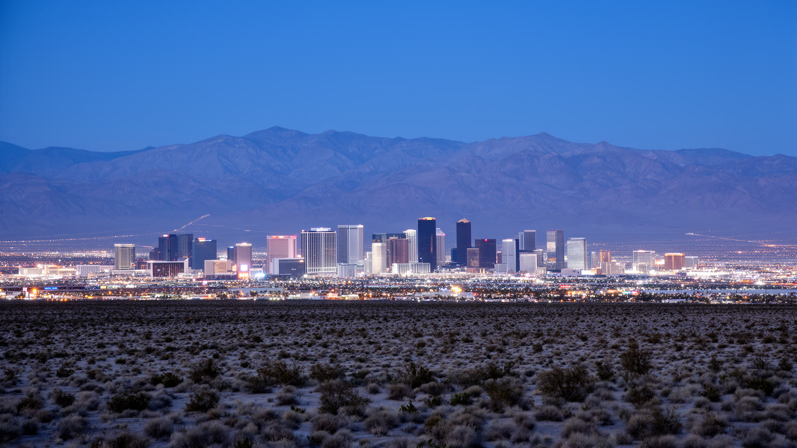
🇺🇸 アメリカ合衆国 / ネバダ州 / World City Atlas
砂漠の水資源、ストリップのホテル群、会議産業、カジノ労働、郊外住宅、移民地区、先住民の土地の記憶が、強烈な観光都市の裏側で結びつきます。
都市の骨格
ラスベガスは、短いストリップだけでなく、空港、会議場、旧市街、郊外住宅、物流倉庫、水処理施設、山麓の自然保護地まで含めて読む都市です。
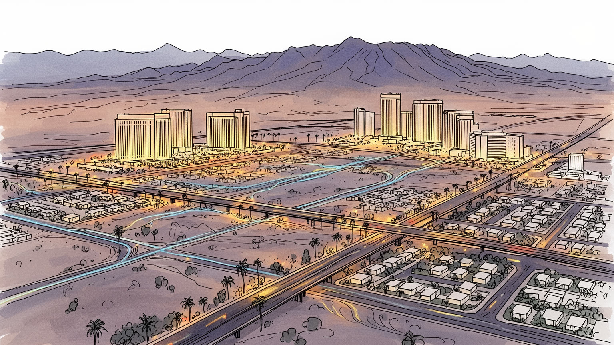
ラスベガスはモハーベ砂漠、軍事試験場、フーバーダム、コロラド川の水資源、州境を越える観光流動の結節です。歓楽の街の印象の背後で、連邦土地、先住民史、水の配分が都市の条件を作ります。砂漠の政治を映します。
ホテル、カジノ、会議、飲食、清掃、警備、舞台、空港、配送、建設、不動産が雇用を支えます。チップ収入、シフト勤務、組合、移民労働、景気循環が生活を左右し、観光の輝きは現場の反復で保たれます。都市の基盤です。
ショー、ボクシング、音楽、結婚式、メキシコ系やフィリピン系のコミュニティ、教会、寺院、モスクが都市を厚くします。表通りの演出だけでなく、移民家族の祭礼と祈りが日常の暦を支えています。信仰も多彩です。
旅行者はストリップ、旧市街、砂漠景観を巡りますが、住民には家賃、暑熱、車依存、水使用、夜勤、学校、医療が現実です。観光都市の評価は、訪問者の快楽と住民の持続性を同時に見て初めて定まります。日常も街です。
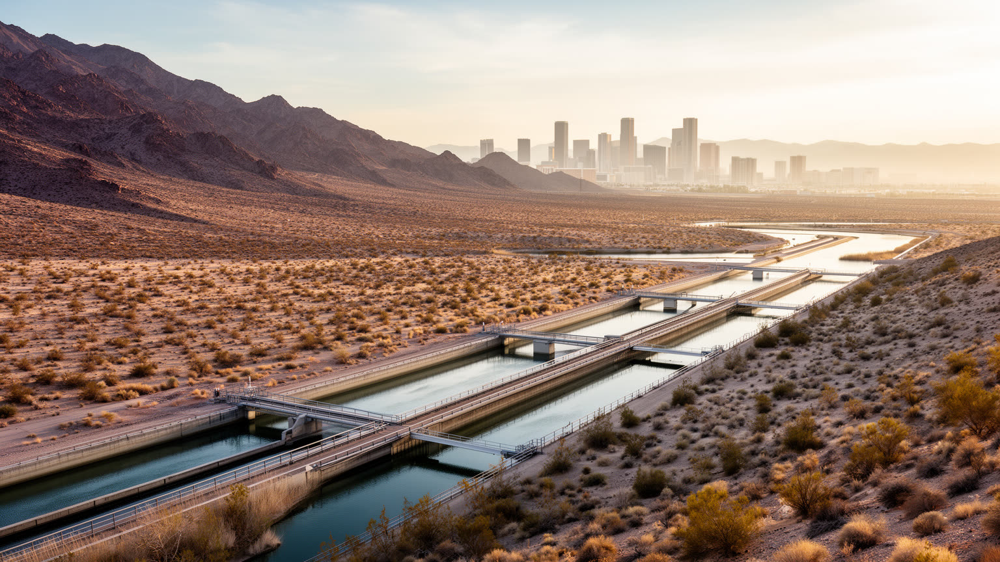
ラスベガスを読む入口は、きらびやかなホテル群ではなく水です。都市はモハーベ砂漠の乾いた盆地にあり、年間降水量は少なく、夏は極端に暑いです。にもかかわらず、巨大ホテル、ゴルフ場、郊外住宅、噴水、プール、会議施設は大量の来訪者を受け入れます。水の多くはコロラド川流域に依存し、レイクミードの水位、州間協定、節水規制、芝生撤去、再利用水、料金制度が都市の成長を直接左右します。観光客が短期滞在で消費する水と、住民が日常生活で使う水は同じ制約の中にあります。砂漠都市の豊かさは、自然を克服した物語として語られがちですが、実際には遠くの流域、先住民の土地、ダム建設、連邦政策、農業用水との配分に支えられています。気候変動が暑さと干ばつを強めるほど、ラスベガスは都市デザイン、産業構造、住宅の緑化を見直さなければなりません。水を背景に置くと、ストリップの光は単なる娯楽ではなく、砂漠の限界と交渉する都市実験として見えてきます。節水技術は進んでいても、人口増加と観光の拡大が続けば負荷は消えません。家庭の庭、ホテルのランドスケープ、道路沿いの植栽、冷却設備は、すべて水の政治に触れています。雨が少ない土地では、一滴の節約も都市の倫理として意識されます。その意識は観光にも及びます。水は都市の未来を決める政治であり、景観の裏側にある最も重要なインフラです。
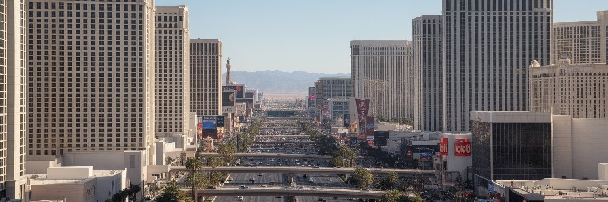
ラスベガス・ストリップは市域の中心そのものではありませんが、都市のイメージをほぼ独占する回廊です。巨大ホテル、カジノ、劇場、レストラン、ショッピング、会議場、歩道橋、空港アクセスが数キロの範囲に詰め込まれ、訪問者は外の砂漠を忘れるほど管理された環境に入ります。建物は都市の街区というより、宿泊、賭博、飲食、移動、買い物を一体化した巨大装置として働きます。内部は涼しく、時間感覚を薄め、長く滞在させるように設計されています。一方で外へ出ると、幅広い道路、車の速度、歩行者の長い移動、暑さ、バス停の待ち時間が現実を戻します。ストリップの華やかさは、人工的なテーマ、音、照明、演出によって作られるが、そこで働く人にとっては清掃、調理、接客、警備、舞台転換、設備保守の職場です。観光客の動線を滑らかにするほど、裏側の搬入口、従業員通路、洗濯、廃棄物処理は見えにくくなります。さらに歩道橋やモノレール、配車乗り場の位置は、誰が快適に移動でき、誰が暑さの中で待たされるかを分けます。建物の内部だけで完結する快適さは、公共空間の弱さを隠すこともあります。夜の光も、昼の暑さも、この回廊の性格を作ります。この回廊を都市として読むには、表の幻想と裏の運営を同時に見る必要があります。ストリップは歓楽地であり、同時に労働、エネルギー、水、交通を集中させる産業地区でもあります。
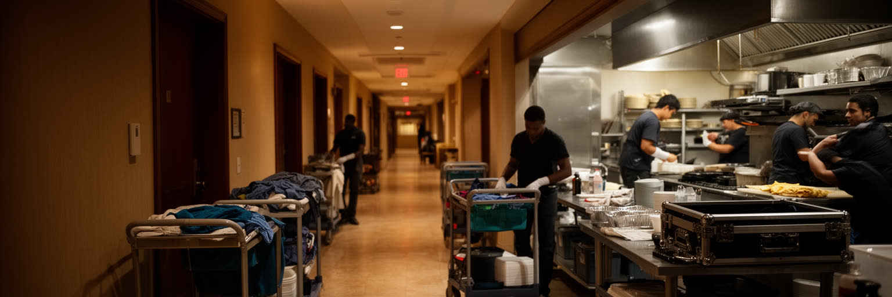
ラスベガス経済は観光と会議の規模で知られるが、その中心にあるのは人の手です。客室清掃、調理、給仕、ディーラー、舞台技術、警備、送迎、空港、倉庫、洗濯、建設、修理、予約管理、清掃、救急が、二十四時間に近い都市の運転を支えます。多くの仕事はシフト制で、チップ、繁忙期、景気後退、感染症、労使交渉の影響を受けやすいです。観光客が休暇を楽しむ時間は、住民にとって夜勤や早朝勤務の時間でもあります。労働組合は賃金、医療保険、雇用保障をめぐって重要な役割を果たし、移民労働者や女性労働者の生活条件とも結びつきます。大型リゾートの利益は巨額でも、住宅費や交通費が上がれば、現場で働く人は都市に残りにくくなります。コンベンションやイベントは短期雇用を増やし、飲食や配送を動かしますが、需要の波も大きいです。ラスベガスの労働を読むことは、カジノのテーブルだけでなく、客室のベッドメイク、搬入口の荷さばき、舞台裏の安全確認を見ることです。空港の遅延、巨大イベントの閉幕、週末の客室入れ替えは、都市全体の勤務表を一気に変えます。職場が観光客の気分を優先するほど、従業員の休憩、通勤、保育の調整は難しくなります。技能が見えにくい仕事ほど、都市の品質を左右しています。歓楽都市の成功は、楽しむ人の数ではなく、支える人が住み続け、休み、家族を持てるかによっても測られます。
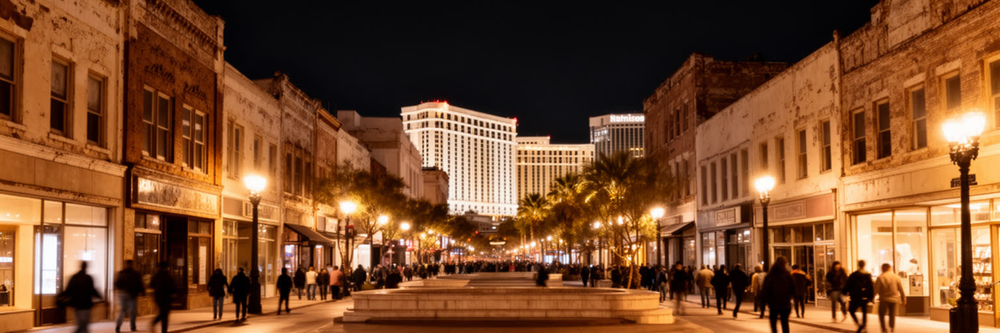
ラスベガスにはストリップ以前の中心があります。鉄道と砂漠の水場を背景に形成された旧市街は、ホテル群の巨大な演出とは違い、低層の街路、古いカジノ、裁判所、行政、住宅、地元のバー、芸術地区、歴史博物館を抱えます。フリーモント周辺は観光化された夜の歩行空間として知られるが、その周囲には長く住む人、低所得者、路上生活者、移民の店、再開発の空き地もあります。旧市街は都市の記憶を残す一方、投資と再開発の圧力にさらされます。ストリップの成功が大規模資本と郊外化を進めた結果、旧中心部は長く影を落とされてきたが、近年は住宅、飲食、文化施設、スタートアップ支援で再び注目されています。ですが再生は単に新しい店を増やすことではありません。家賃上昇で弱い住民を押し出さないこと、公共交通と福祉を整えること、歴史を消費用の装飾にしないことが必要になります。旧市街を歩くと、ラスベガスが一夜で生まれた幻想都市ではなく、鉄道、賭博合法化、核実験時代、観光開発、金融危機、郊外拡張を重ねた都市であることが分かります。行政機能や地域の店が残ることで、旧市街は観光の背景ではなく住民の生活圏としての意味を保ちます。古い街区の小さな空地やモーテルにも、都市の栄枯と住民の記憶が宿ります。そこに都市史が残ります。記憶のある場所ほど、再開発の利益と住民の居場所を丁寧に調整する必要があります。
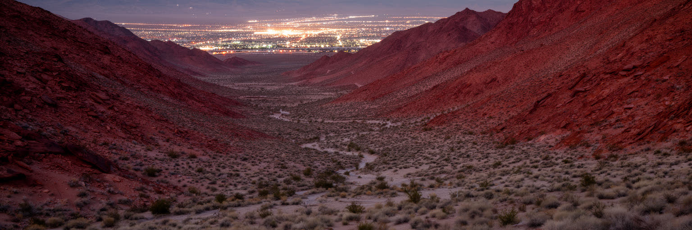
ラスベガスの土地を考えるとき、開発神話だけでは足りません。モハーベ砂漠の谷は、南パイユートなど先住民の生活圏であり、水場、交易路、植物、狩猟、儀礼の記憶を持つ土地でした。都市化、鉄道、牧場、ダム、軍事利用、観光開発は、その記憶をしばしば背景へ押し込めてきました。ネバダ州には連邦管理地が多く、ラスベガス周辺でも国立保護区、軍用地、試験場、自然公園、部族の土地が都市成長の外枠を作ります。近くには核実験場の歴史もあり、冷戦期の国家政策と観光都市の拡大は同じ地域で進みました。砂漠景観は空白に見えやすいが、実際には権利、記憶、環境、軍事、安全保障、レクリエーションが重なる政治的な空間です。観光客が車でレッドロックやフーバーダムへ向かうとき、その道は連邦土地制度、水の開発、先住民の歴史を横切っています。都市の自由な遊びは、管理された土地と資源の上に成り立ちます。ラスベガスを深く読むには、都市の光だけでなく、その外側の暗い砂漠を誰の土地として見るのかを問う必要があります。博物館や保護地の説明だけでなく、都市の学校、観光案内、開発計画にも土地の記憶を戻す必要があります。砂漠を空き地と見なす発想を改めることは、成長の限界を考える第一歩でもあります。土地の記憶を戻すことは、観光の物語を広げ、現在の水と環境の責任を考える基礎になります。今も問われます。
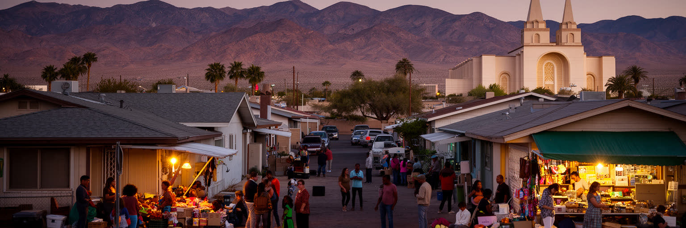
ラスベガスは観光客の一時的な都市である前に、移民と家族が暮らす都市でもあります。メキシコ系、フィリピン系、アジア系、中米系、太平洋諸島系を含む住民は、ホテル、飲食、医療、介護、建設、清掃、教育、物流を支え、郊外の住宅地や商店街に生活の拠点を作ってきました。スペイン語、タガログ語、韓国語、中国語、ベトナム語などが学校、教会、食品店、医療窓口で聞こえます。宗教も多様で、カトリック教会、福音派教会、仏教寺院、モスク、ヒンドゥー寺院、ユダヤ教会堂、地域の祈りが、労働の疲れや家族の節目を支えます。ストリップの演出は国籍を消すように見えますが、裏側の都市は言語、食、送金、祭礼、移民手続き、学校支援によって日々編まれています。移民労働は都市の便利さを支える一方、在留資格、賃金、医療保険、住宅、差別の問題を抱えやすいです。宗教施設やコミュニティ団体は、祈りだけでなく、食料支援、相談、教育、災害時の連絡網にもなります。ラスベガスの多文化性を読むには、ショーの舞台ではなく、日曜の礼拝後の食事、学校の保護者会、深夜勤務から戻る家族の生活を見る必要があります。言語支援や医療へのアクセスは、観光地の便利さとは別の基準で都市を評価させます。多文化の店は、食材を買う場所であると同時に、仕事や住まいの情報が交わる場所でもあります。観光都市の持続性は、働く住民が尊厳を持って暮らせる多文化の基盤にかかっています。
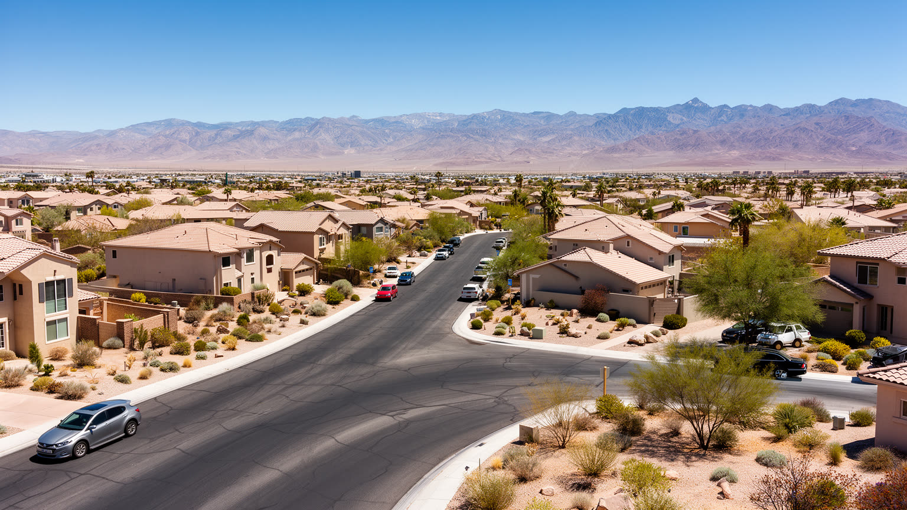
ラスベガスの日常生活は、ストリップよりも広大な郊外住宅地にあります。ヘンダーソン、ノースラスベガス、サマリン方面まで広がる都市圏では、一戸建て、集合住宅、ショッピングセンター、学校、倉庫、医療施設が広い道路で結ばれます。多くの世帯にとって車は生活必需品で、通勤、買い物、通学、病院、余暇が自動車の距離で決まります。住宅価格は他の大都市圏より手が届きやすい時期もあったが、人口流入と投資で家賃や購入価格は上がり、観光やサービス業で働く人の負担になっています。郊外の拡張は土地を消費し、舗装面を増やし、暑熱を強め、水を使う庭や道路維持を必要とします。新しい住宅地は清潔で計画的に見える一方、公共交通の弱さ、孤立、高齢者の移動、低所得者の遠距離通勤を生むこともあります。学校区や治安、医療への距離は家の価値と生活の質を分けます。ラスベガスの住宅問題は、観光都市の裏方がどこに住むのかという問題でもあります。雇用が二十四時間型であるほど、夜勤後に安全に帰れる交通、冷房費を払える賃金、子どもを預けられる制度が重要になります。冷房費や自動車保険、燃料費は、家賃とは別に家計を圧迫します。歩ける近所や涼める公園が少ない地区では、子どもや高齢者の外出も制限されます。郊外の広がりを読むことは、砂漠で成長する都市がどれだけ持続的な生活基盤を作れるかを読むことです。
ラスベガスの文化は、単なる賭博だけではありません。大型ショー、コンサート、ボクシング、格闘技、アメフト、アイスホッケー、マジック、コメディ、結婚式、クラブ、レストラン、建築的なテーマ演出が、都市全体を舞台のように作っています。試合日は地元の応援も街を動かします。ここでは本物らしさよりも、短時間で強い体験を作る編集力が重要になります。世界各地の都市や神話を借りたホテルの景観は、批判的に見れば表層的な模倣ですが、観光客にとっては気軽に非日常へ入る装置でもあります。大衆文化の集積は、演者、音響、照明、衣装、舞台監督、ダンサー、料理人、映像技術者、警備員、清掃員の技能に支えられます。ラスベガスの舞台は、失敗を見せないために膨大なリハーサルと保守を必要とします。結婚式やショーは軽い娯楽に見えて、移民、家族、ジェンダー、宗教、消費文化の交差点でもあります。都市が売るのは物語であり、訪問者は短い滞在で別の自分を試します。ですがその自由は、依存症、浪費、孤独、労働負担という影も持ちます。地元の芸術地区や小さな音楽会は、巨大リゾートとは別の創作の場を残そうとしています。常設ショーと一夜限りのイベントが混在することで、都市は記憶より瞬間の強度を重んじる文化を作ります。ラスベガス文化を読むには、派手な外観を笑うだけでなく、現代の大衆がなぜ演出された非日常を必要とするのかを考える必要があります。娯楽は軽いものではなく、都市の経済と感情を結ぶ言語です。
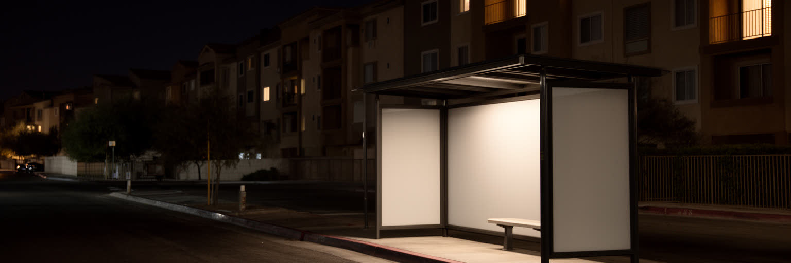
ラスベガスの明るさは、社会問題を消すわけではありません。ギャンブル依存、アルコール、薬物、路上生活、メンタルヘルス、家庭内暴力、低賃金、医療保険、退役軍人支援、観光客のトラブルは、都市の表面から見えにくい場所に残ります。カジノは娯楽であり税収源でもありますが、損失を抱える人や家族への支援を伴わなければ、都市の豊かさは一部の痛みの上に乗ります。路上生活者は旧市街や幹線道路の周辺に見え、猛暑や寒暖差は命に関わります。ホテルの近くでは安全と観光イメージが優先されやすく、困窮者は視界の外へ押し出されることもあります。社会サービス、避難所、依存症治療、職業訓練、低価格住宅、公共交通、暑熱時の冷房避難場所は、歓楽都市にとって不可欠なインフラです。冷房費を払えない世帯、日陰のないバス停で待つ人、屋外で働く人ほど、気候リスクを強く受けます。労働者が収入の波にさらされ、家賃が上がり、車なしで生活しにくい都市では、少しの失業や病気が住まいの喪失へつながります。観光客の安全を守る警備と、住民の生活を守る福祉は、同じ都市政策として結びつける必要があります。ラスベガスを責任ある都市として見るなら、観光収入や大型投資だけでなく、弱い立場の人が助けへ届く距離を測る必要があります。快楽を売る都市だからこそ、依存と孤立、暑さに向き合う制度の厚みが問われます。
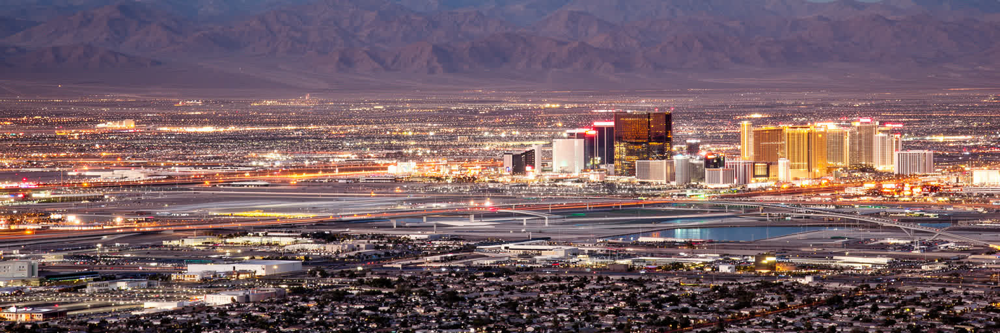
ラスベガスは、世界的な歓楽都市であると同時に、砂漠の制約、移民労働、住宅、連邦土地、水資源、気候リスクを抱える生活都市です。ストリップのホテル群だけを見れば、都市は人工的な夢の装置に見えます。しかし少し外へ出ると、旧市街、郊外住宅、物流施設、学校、教会、寺院、倉庫、バス停、山麓の保護地が、観光の光を支える別の地図を作っています。ラスベガスの重要性は、賭博やショーの規模だけではありません。水の少ない場所で巨大な消費都市を維持する技術と矛盾、二十四時間型観光を動かす労働、短期の快楽と長期の生活をどう両立させるかを見せる点にあります。都市の魅力は演出された非日常にありますが、その非日常は、客室を整える人、料理を作る人、舞台を組む人、道路を走る人、子どもを学校へ送る人、水を節約する人の普通の日常に依存しています。ラスベガスを読むことは、光を否定することではありません。光がどこから来て、誰の時間を照らし、誰の負担を影に置くのかを確かめることです。観光、住宅、水、暑さ、土地の記憶を同じ地図に戻すと、派手な都市像の奥にきわめて実務的な都市運営が見えてきます。そこでは楽しさと脆さ、自由と管理、成長と節制が絶えず並んでいます。この矛盾を隠さず読むほど、都市の現実は立体的になります。砂漠の都市は、未来の気候時代に多くの都市が直面する選択を先取りしています。